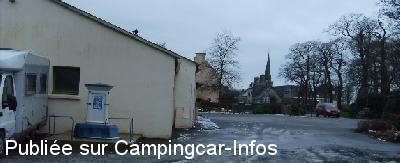

ASN = Aire de services avec stationnement nuit possible de :
LA MARTYRE
(N° 821)
Accès/adresse :
Route du Keff
29800 LA MARTYRE
29800 LA MARTYRE
Latitude : (Nord) 48.44919° Décimaux ou 48° 26′ 57′′
Longitude : (Ouest) -4.15749° Décimaux ou -4° 9′ 26′′
Tarif : Gratuit
Services :


Autres informations :
Ouverte toute l'année.
10 Emplacements

Le 17/02/2009 par andsyl
de
andsyl
le 17/02/2009 :
Effectivement pour vidanger, pas l'idéal et celui des eaux noires bouché, sinon aire calme et spacieuse, pas loin de Brest.
Effectivement pour vidanger, pas l'idéal et celui des eaux noires bouché, sinon aire calme et spacieuse, pas loin de Brest.
de
GWEN-GY
le 13/08/2006 :
Nous y avons passé plusieurs week-end en hiver 2005 et juin de cette année. Cela a dû changer par rapport aux mails ci-dessous : nous n'avons qu'à féliciter la commune : la borne était en parfait état de fonctionnement - eau et éléctricité toujours gratuit -
cadre très agréable : grand parking gravillonné et plat au bord d'une route très calme et d'un petit bois sympa.
Nous y avons passé plusieurs week-end en hiver 2005 et juin de cette année. Cela a dû changer par rapport aux mails ci-dessous : nous n'avons qu'à féliciter la commune : la borne était en parfait état de fonctionnement - eau et éléctricité toujours gratuit -
cadre très agréable : grand parking gravillonné et plat au bord d'une route très calme et d'un petit bois sympa.